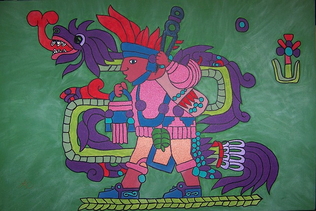

Introduccion:

Cultura Maya
La civilización o cultura maya fue una de las principales civilizaciones que se desarrolló en la antigua Mesoamérica. Cultura muy destacada por sus elaborados sistemas de escritura, numéricos y por el uso del calendario, así como por su impresionante arte y arquitectura.
Cultura Nordica
Los pueblos nórdicos adoraban dos clases de dioses, una de ellas y la principal, es la de los Æsir. En Asgard, el hogar de los dioses, habitaban los Æsir (dioses) y las Asynjur (diosas). Todos ellos componían la asamblea a cuya cabeza estaba Odín, el más noble y el más importante.
Cultura Inca

Los incas fueron la civilización más compleja que se desarrolló en la América del Sur, constituyendo un vasto imperio que abarcó los actuales países de Perú, Bolivia, gran parte de Ecuador, el noroeste de Argentina y el norte de Chile.